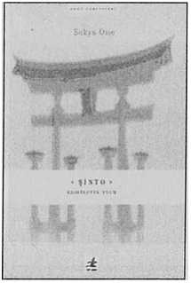

Japon halkının manevi inancı olan Şinto, ülkemizde diğer dinlere kıyasla oldukça az bilinmekledir.
Budacılık, Hristiyanlık ve İslam’dan farklı olarak Şinto inancının ne Gautama Buda, İsa Mesih veya Hz. Muhammed gibi bir kurucusu, ne de Budacı Sutralar, İncil ya da Kur’an gibi kutsal metinleri vardır.
Bu kitap ilk olarak 1960 yılında Kami’lerin Yolu: Tapınak Şintosu'na Giriş adıyla Tokyo'daki Uluslararası Din Araştırmaları Enstitüsü’nün yayını olarak yayımlandı. Mesleki hayatının tamamını bu inancı araştırmaya adamış olan yazar - Kokugakuin Üniversitesi profesörü ve Şinto Tapınakları Birliği okutmanı Dr. Sokyo Ono - Tapınak Şintosu'nun ifade ettiği anlamın çağdaş bir sunumu olarak gerekli materyalleri ve tapınak dünyası önderlerinin zengin görüşlerini topladı. Enstitü’nün Araştırma Bölümü Başkanı, Bay William P. Woodward da hem kitabın hazırlanmasına yardımcı oldu hem de editörlüğünü yaptı. Çizimlerse Tokyo’daki Yasukuni Tapınağı'nda rahip olan Sadao Sakamoto tarafından hazırlandı.
Ülkemizde Şinto inancına ait hemen hemen ilk kaynak kitap olma özelliğine sahip bu eserin, bu konudaki önemli bir boşluğu dolduracağına inanıyoruz.